Workshop Manual ➭ STEERING ➭ POWER STEERING ➭ STEERING GEAR AND LINKAGE ASSEMBLY
STEERING GEAR AND LINKAGE ASSEMBLY
id061400801200
{: #wp1059776}
Caution
• Place copper plates, rag, or similar material in a vise, when securing the mounting bracket portion of the steering gear.
- Assemble in the order indicated in the table.{: #wp1059794}
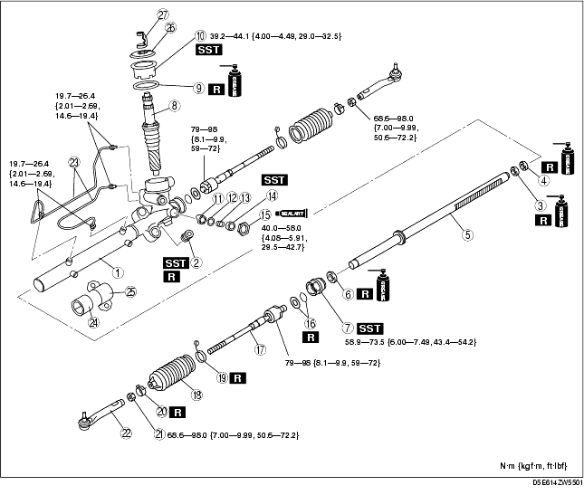
|
Gear housing {: #wp1059835} |
|
|---|---|
|
2 {: #wp1059873} |
Mounting rubber {: #wp1059876} (See Mounting Rubber Assembly Note .) {: #wp1059909} |
|
3 {: #wp1059880} |
Oil seal (gear housing side) {: #wp1059883} (See Steeling Rack, Oil Seal (Gear Housing Side), Inner Guide Assembly Note .) {: #wp1059934} |
|
4 {: #wp1059947} |
Inner guide {: #wp1059950} (See Steeling Rack, Oil Seal (Gear Housing Side), Inner Guide Assembly Note .) {: #wp1059970} |
|
5 {: #wp1059983} |
Steering rack {: #wp1059986} (See Steeling Rack, Oil Seal (Gear Housing Side), Inner Guide Assembly Note .) {: #wp1060008} |
|
6 {: #wp1060021} |
Oil seal (holder side) {: #wp1060024} (See Oil Seal (Holder Side), Holder Assembly Note .) {: #wp1060048} |
|
7 {: #wp1060061} |
Holder {: #wp1060064} (See Oil Seal (Holder Side), Holder Assembly Note .) {: #wp1060090} |
|
8 {: #wp1060103} |
Pinion shaft component {: #wp1060106} |
|
9 {: #wp1060132} |
O-ring {: #wp1060135} |
|
10 {: #wp1060163} |
Pinion plug {: #wp1060166} (See Pinion Plug Assembly Note.) {: #wp1060194} |
|
11 {: #wp1060206} |
Support yoke {: #wp1060209} |
|
12 {: #wp1060237} |
Washer {: #wp1060240} |
|
13 {: #wp1060268} |
Yoke spring {: #wp1060271} |
|
14 {: #wp1060299} |
Adjusting cover {: #wp1060302} (See Adjusting Cover Assembly Note.) {: #wp1060332} |
|
15 {: #wp1060344} |
Locknut (adjusting cover) {: #wp1060347} (See Adjusting Cover Assembly Note.) {: #wp1060379} |
|
16 {: #wp1060391} |
Washer and O-ring {: #wp1060394} |
|
17 {: #wp1060427} |
Tie rod {: #wp1060430} |
|
18 {: #wp1060462} |
Boot {: #wp1060465} |
|
19 {: #wp1060497} |
Boot band {: #wp1060500} |
|
20 {: #wp1060532} |
Boot clamp {: #wp1060535} |
|
21 {: #wp1060567} |
Locknut {: #wp1060570} |
|
22 {: #wp1060602} |
Tie-rod end {: #wp1060605} |
|
23 {: #wp1060639} |
Oil pipe {: #wp1060642} |
|
24 {: #wp1060674} |
Mounting rubber {: #wp1060677} |
|
25 {: #wp1060709} |
Mounting bracket {: #wp1060712} |
|
26 {: #wp1060744} |
Dust cover {: #wp1060747} |
|
27 {: #wp1060779} |
Clip {: #wp1060782} |
Mounting Rubber Assembly Note
- Install the mounting rubber so that two notches of mounting rubber are aligned to the steering rack.{: #wp1060862}
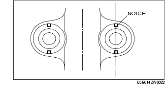
-
Apply soapy water to the rubber part of the mounting rubber.
-
Press the mounting rubber until the mounting rubber end comes out completely from the gear housing using the SSTs and a press.{: #wp1060899}
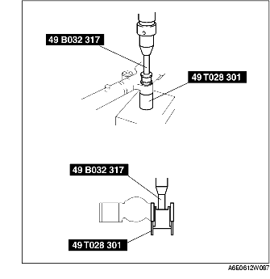
- Reverse the gear housing, then press the mounting rubber until the mounting rubber end comes out completely from the other side. At this time, the mounting rubber end and steel pipe are aligned.{: #wp1060945}
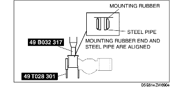
Steeling Rack, Oil Seal (Gear Housing Side), Inner Guide Assembly Note
-
Apply multi-purpose grease to the oil seal (gear housing side) and Inner guide.
-
Install the plastic bag to the steering rack teeth so as not to damage the oil seal (gear housing side) and the inner guide, and install the oil seal (gear housing side) and the inner guide to the seal. Move the oil seal (gear housing side) and the inner guide together with the plastic bag so that they pass the steering rack teeth, then remove the plastic bag. {: #wp1060993}
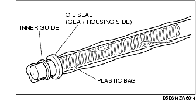
-
Put the steering rack into the gear housing.
-
Using a press, press-in the oil seal (gear housing side) and inner guide until the press-in force increases rapidly.{: #wp1061030}
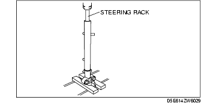
Oil Seal (Holder Side), Holder Assembly Note
-
Apply multi-purpose grease to the oil seal holder side).
-
Install the plastic bag to the steering rack end so as not to damage the oil seal (holder side) and install the oil seal (holder side) to the seal. Move the oil seal (holder side) together with the plastic bag so that they pass the steering rack end, then remove the plastic bag. {: #wp1061080}
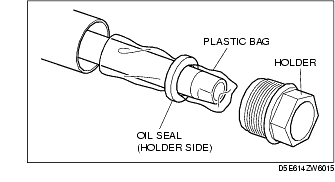
-
Install the holder and move the steering rack until it contacts the housing.
-
Tighten the holder to the specified torque using the SST.{: #wp1061117}
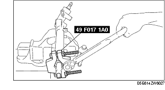
Tightening torque58.9-73.5 N·m {6.00-7.49 kgf·m, 43.4-54.2 ft·lbf}
- After tightening the holder, crimp the cylinder end as shown in the figure using a flathead screwdriver so that the holder does not loosen.{: #wp1061186}
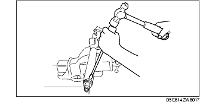
Pinion Plug Assembly Note
- Tighten the pinion plug using the SST.{: #wp1061223}
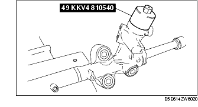
Tightening torque39.2-44.1 N·m {4.00-4.49 kgf·m, 29.0-32.5 ft·lbf}
Adjusting Cover Assembly Note
-
Set the rack to the center position.
-
Tighten the adjusting cover to 20 N·m {2.0 kgf·m, 15 ft·lbf}.
-
Rotate the pinion shaft thoroughly three times to make sure that the pinion shaft and the rack engage smoothly, then loosen the adjusting cover.
-
Retighten the adjusting cover to 4.9 N·m {0.5 kgf·m, 3.6 ft·lbf}, then loosen it about 0 to 15° using the SST.{: #wp1061409}
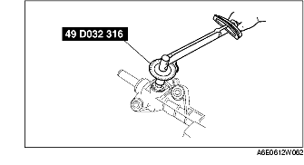
- Measure the rotation torque in the range ±90° from the pinion gear neutral point using a SST and a pull-scale.{: #wp1061473}
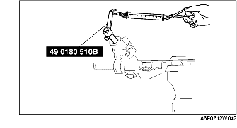
• If not within the specification, repeat Steps 2-4.
Pinion shaft rotation torqueCenter of rack ±90°: 0.98-1.38 N·m {10.0-14.0 kgf·cm, 8.7-12.2 in·lbf}[Pull scale reading: 9.8-13.8 N {1.00-1.40 kgf, 2.21-3.10 lbf}]Except center of rack ±90°: Less than 1.87 N·m {19.1 kgf·cm, 16.6 in·lbf}[Pull scale reading: Less than 19.5 N {1.99 kgf, 4.38 lbf}]
-
Apply sealant to the thread of the locknut.
-
Hold the adjusting cover so as not to rotate and tighten the locknut.{: #wp1061633}
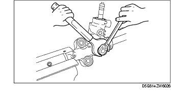
Tightening torque40.0-58.0 N·m {4.08-5.91 kgf·m, 29.5-42.7 ft·lbf}
Hermetic sealing inspection
-
Connect the SSTs to the power cylinder section of the gear housing.
-
Apply 53.3 kPa {400 mmHg, 15.7 inHg} vacuum with a vacuum pump and verify that it is held for at least 30 seconds.{: #wp1061756}
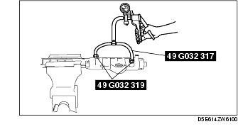
- If the vacuum is not held, replace the oil seal.